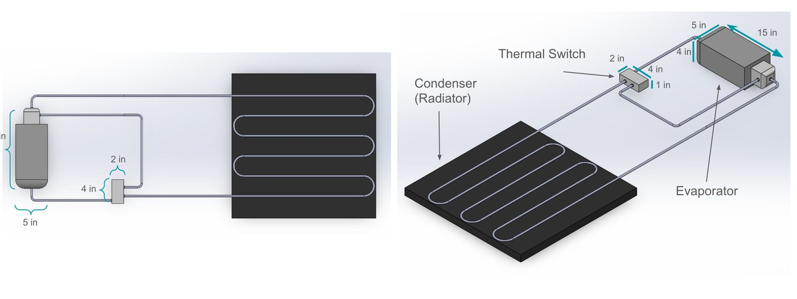

EXPERIENCE
Projects
Hands-on engineering — the actual designs, models, and results, not just the report covers.
Lunar Rover — Thermal Control System
I led an 8-person team through a full design-review lifecycle (Proposal → SRR → PDR → CDR) for a lunar rover that had to survive permanently-shadowed crater conditions. As Thermal Systems Lead I owned the thermal-control subsystem end to end: requirements, radiator sizing in SolidWorks, the heat-pipe loop, and the thermal-vacuum test plan — keeping the avionics alive across a −205 °C to 100 °C operating range.

The thermal architecture pairs a radioisotope heater unit (RHU) with main and back radiator panels, linked by a flexible heat-pipe loop (FHPL) that pulls waste heat off the electronics box and rejects it to space. I ran trade studies on mass, power, cost, and integration that cut estimated project cost ~35% and drove the radiator to ~22 ft² of rejection area (~59% lower heat-flux density).



▶ My CDR slides — Thermal + Team Lead (29 slides)
Full team review package:
Proposal ·
SRR ·
PDR ·
CDR ·
SOW ·
I&T
Thermochemical Nonequilibrium Shock Modeling
I built a 1-D nitrogen shock-layer model using Rankine–Hugoniot jump conditions and a two-temperature N₂/N formulation to capture thermochemical nonequilibrium behind a strong shock. A coupled ODE solver marches species concentrations, velocity, translational temperature, and vibrational temperature through the relaxation zone until the flow returns to equilibrium.


Read full report (PDF) · Source: main.py · rh_jump.py · simulate.py